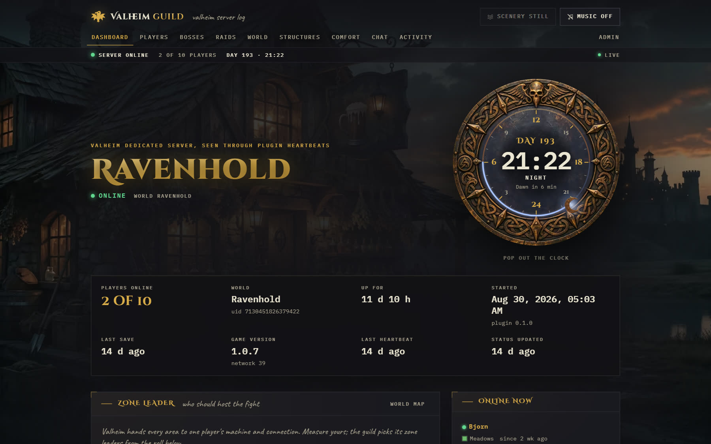
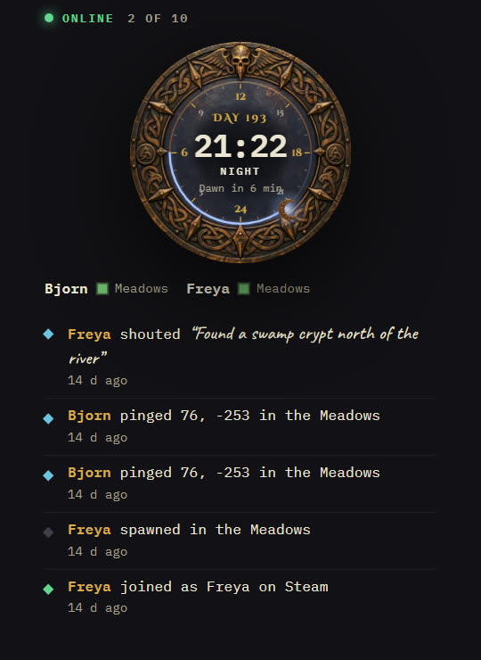
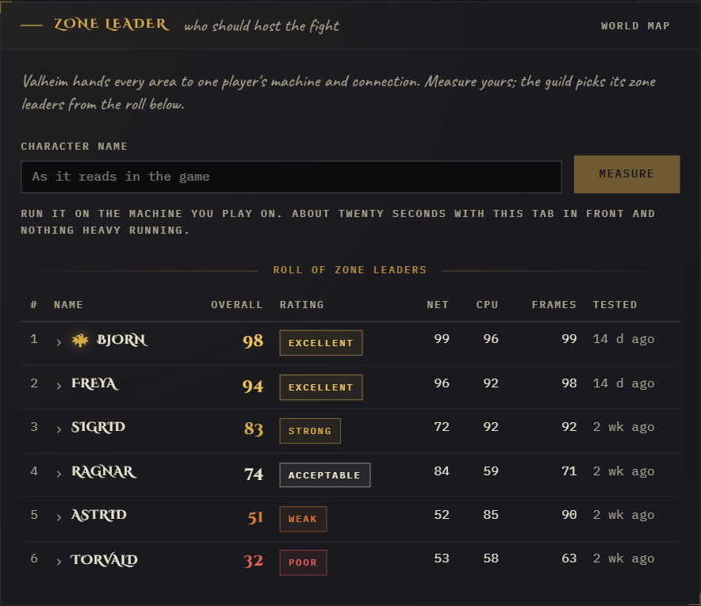
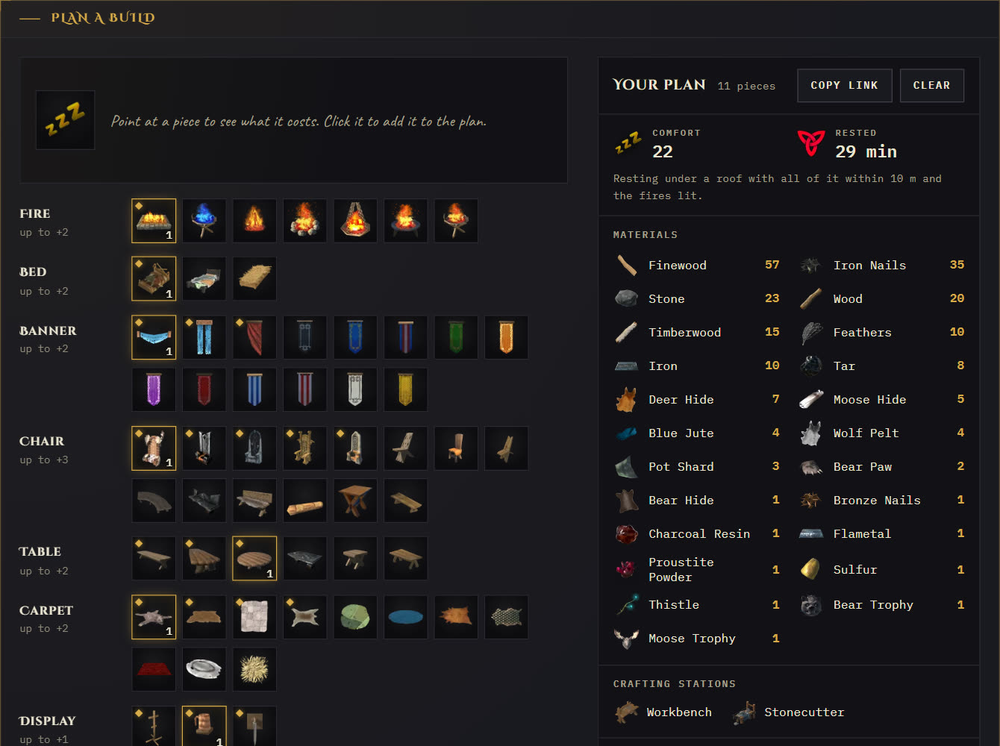

Only in Muninn

World clock
The in-game day and hour on a bronze dial, live from the server. Pop it out into its own window. The activity feed warns the guild before nightfall.

Zone leader
Valheim hands every area to one player's machine. Each player measures theirs in the browser in about twenty seconds, and the guild sees who should host the fight.

Comfort planner
Every comfort piece, read from the game your server runs, with its icon and recipe. Pick pieces and the plan adds up comfort, Rested time and every material you need.
Also on the site
- Who is online, where they are and for how long
- Boss progression, raids, deaths and kills
- Every structure built, the explored world map, the activity feed and chat
- An admin area for plugin setup, in-game announcements and backups
- Switches to hide chat, positions, the map or Steam ids
Install
-
Run the site.
On a machine with Docker and a domain name pointing at it. Caddy gets the HTTPS certificate.
mkdir muninn && cd muninn curl -fsSLO https://oddessentials.github.io/muninn/docker-compose.yml printf 'DOMAIN=guild.example.com\nPOSTGRES_PASSWORD=%s\n' "$(openssl rand -hex 16)" > .env docker compose up -d
-
Set the admin password.
Open
https://guild.example.com/admin. The first visit sets it. -
Install the plugin.
The admin Plugin page has the DLL and a config with your site's address and secret. Put them in
BepInEx/plugins/andBepInEx/config/on the game server, with BepInExPack_Valheim installed, and restart it. -
Or run the game server here too.
The
valheimprofile starts a dedicated server with BepInEx and the plugin already connected.echo 'SERVER_PASS=choose-a-password' >> .env docker compose --profile valheim up -d
What the plugin sends
Only to your own site, signed with its secret: server starts and saves, players joining and leaving with their platform id, deaths, positions, bosses, raids, structures, chat, the map image and the comfort pieces. The Thunderstore page has the full list.
Free and open
MIT licensed. The source, the Docker image and the plugin are all public.